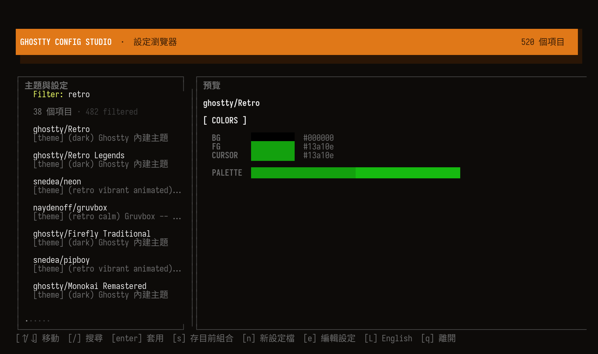
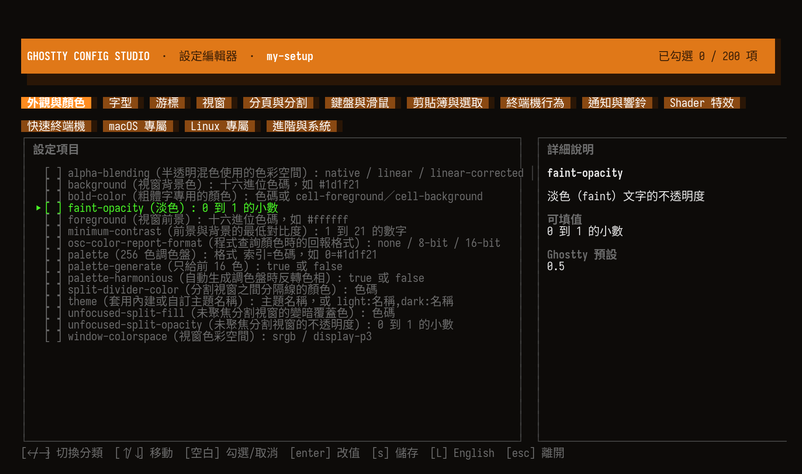
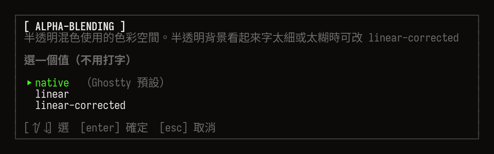
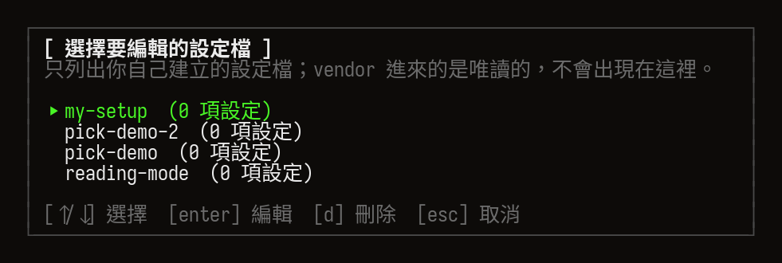
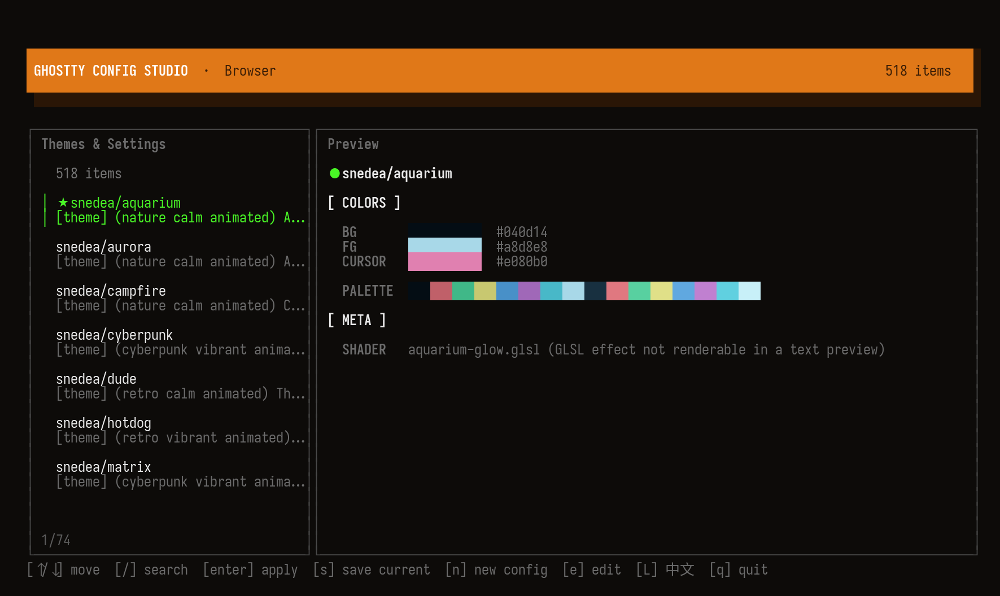
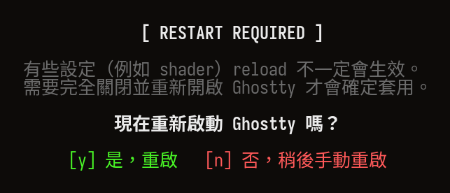
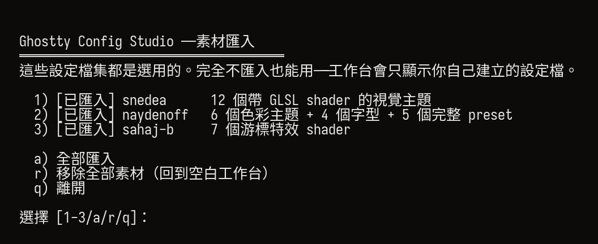
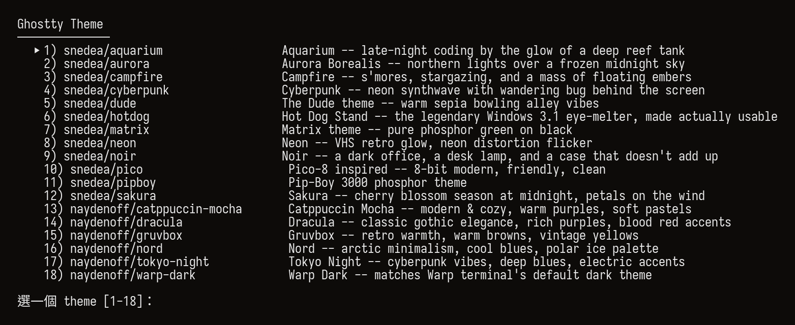

一行裝好
macOS 與 Ghostty 之外不需要別的。Go 只在 Homebrew 編譯時用到。
brew install shigachentw/tap/ghostty-config-studio

看得到顏色，才叫預覽
游標移到哪，右邊就把那個主題的背景、前景、游標色和整組 16 色調色盤畫出來。不是丟一段設定檔原文給你自己想像。
- 1Ghostty 內建的 460+ 個主題直接讀取，不重新散布別人的檔案。
- 2模糊搜尋比對名稱、來源、分類標籤與描述，例如 /retro、/nord。
- 3每個項目都標了來源與風格標籤，最近套用過的下次排最前面。

200 個設定，全部附說明
Ghostty 的每個設定項目依用途分成 14 個分類頁。一行就寫清楚鍵名、它是什麼、可以填什麼。
- 1用空白鍵勾選建立設定檔，不用手寫任何設定語法。
- 2固定選項的設定直接列出選項用方向鍵挑，完全不用打字。
- 3自由數值的預先帶入 Ghostty 預設值，並標出可填範圍。
- 4自己建立的設定檔可以隨時回頭編輯或刪除，匯入的則是唯讀。


按 L 就換一種語言
介面、分類頁籤，以及全部 200 個設定的說明與可填值，都跟著換。英文說明取自 Ghostty 官方文件。這個網站上方那顆按鈕也一樣。

它只碰自己那一段
所有選擇都寫在註解標記包住的區塊裡，用的是 Ghostty 自己的 config-file 引用機制。區塊外你手寫的設定完全不動。
# >>> ghostty-picker managed >>> # category:theme config-file = ~/.config/ghostty-config-studio/assets/shader-themes/config.campfire # category:font config-file = ~/.config/ghostty-config-studio/assets/fonts/iosevka.conf # <<< ghostty-picker managed <<<
- 1theme / font / cursor 各佔一行，可以獨立疊加；preset 則是完整組合，選了會取代整段。
- 2刪掉正在套用中的設定檔時，會一併把引用移除。少了這步，Ghostty 開不了被引用的檔案，整份設定會失效。
- 3匯入的素材與你建立的設定檔都放在 ~/.config/ghostty-config-studio/，brew upgrade 與 brew uninstall 都帶不走。

社群素材，你自己挑
本體不夾帶任何第三方設定檔。想要 GLSL shader 主題或游標動畫，執行 ghostty-setup 單獨挑要哪幾包，隨時可以移除。完全不匯入也能用。

TUI 之外也有指令
每個分類都有獨立的數字選單指令，適合寫進 script 或直接切換。語言跟 TUI 共用同一個開關。
ghostty-tui完整工作台ghostty-theme主題，--search 可搜內建 460+ 個ghostty-font字型ghostty-preset完整 presetghostty-cursor游標特效 shaderghostty-window視窗透明度與模糊ghostty-theme --current列出每個分類目前的選擇

瀏覽器
- ↑ ↓移動，右側即時預覽
- /模糊搜尋
- enter套用選中的項目
- s把目前組合存成自訂 preset
- n新建設定檔並進入編輯器
- e列出可編輯的設定檔
- L切換中文 / English
設定編輯器
- ← →切換分類頁
- ↑ ↓移動，右側顯示完整說明
- space勾選或取消，勾選時跳出數值輸入
- enter修改已勾選項目的值
- d在設定檔清單刪除一份設定檔
- s儲存
- esc離開
開始用
裝完直接跑 ghostty-tui。不需要先下載任何素材。
brew install shigachentw/tap/ghostty-config-studio